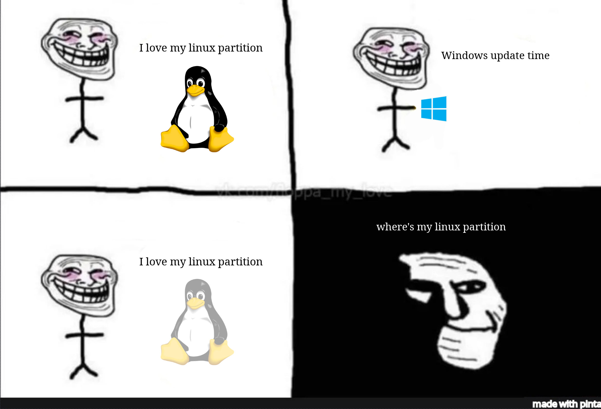

LTのタイトルなんて決まらねーよ
Sumi-Sumi
窓を叩き割って始めるLinux入門
Linuxどうやって
使えるようになった？
これが分からない
サーバーを構築したかったわけではない
「windowsよりLinuxの方が開発しやすいよ！」とどこかで見た
「機械学習するならLinuxだよ！」とやっぱりどこかで見た
軌跡を振り返ってみる
原始、開発環境はwindowsだった
Anaconda
がよく飛ぶ
突然出るブルースクリーン…
→再インスコバトルスタート
そもそも機械学習するには非力なマシン
2C4Tのラップトップ
Ubuntuをデュアルブートしよう
apt
って素晴しい！
webを巡回しなくもソフトをインストールできるだと…!
ちょっと重い…かも…?
ちょっと重い
Unity
が採用されていた16.04の時期だった
test
windows updateしたらOSが
破壊された！
うぉおおおおおい！

いっそのこと窓を叩き割ろう!